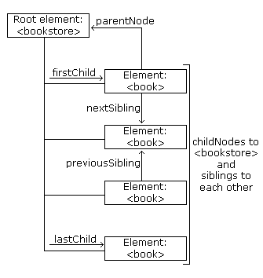

Nodes can be navigated using node relationships.
Accessing nodes in the node tree via the relationship between nodes, is often called "navigating nodes".
In the XML DOM, node relationships are defined as properties to the nodes:
The following image illustrates a part of the node tree and the relationship between nodes in books.xml:
All nodes have exactly one parent node. The following code navigates to the parent node of <book>:
var xmlDoc=loadXMLDoc("books.xml");
var x=xmlDoc.getElementsByTagName("book")[0];
document.write(x.parentNode.nodeName);
Example explained:
Firefox, and some other browsers, will treat empty white-spaces or new lines as text nodes, Internet Explorer will not.
This causes a problem when using the properties: firstChild, lastChild, nextSibling, previousSibling.
To avoid navigating to empty text nodes (spaces and new-line characters between element nodes), we use a function that checks the node type:
function get_nextSibling(n)
{
y=n.nextSibling;
while (y.nodeType!=1)
{
y=y.nextSibling;
}
return y;
}
The function above allows you to use get_nextSibling(node) instead of the property node.nextSibling.
Code explained:
Element nodes are type 1. If the sibling node is not an element node, it moves to the next nodes until an element node is found. This way, the result will be the same in both Internet Explorer and Firefox.
The following code displays the first element node of the first <book>:
<html>
<head>
<script src="loadxmldoc.js">
</script>
<script>
//check if the first node is an element node
function get_firstChild(n)
{
y=n.firstChild;
while (y.nodeType!=1)
{
y=y.nextSibling;
}
return y;
}
</script>
</head>
<body>
<script>
var xmlDoc=loadXMLDoc("books.xml");
var x=get_firstChild(xmlDoc.getElementsByTagName("book")[0]);
document.write(x.nodeName);
</script>
</body>
</html>
Output:
title
Example explained: